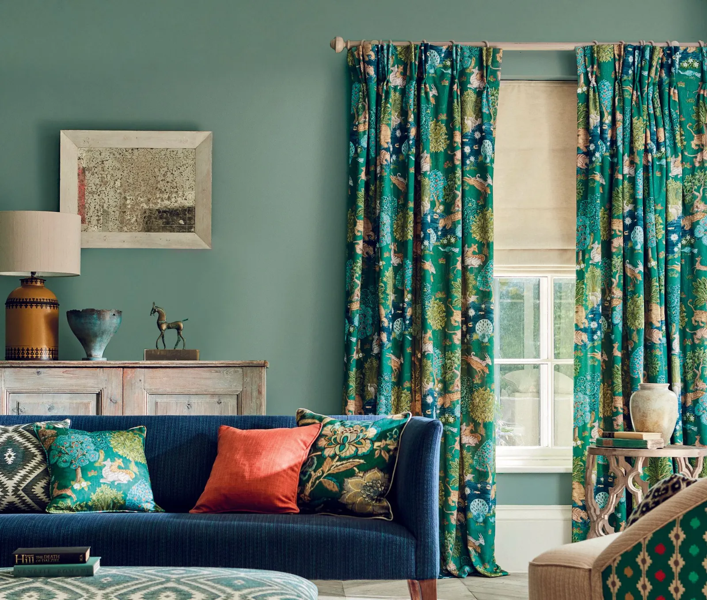
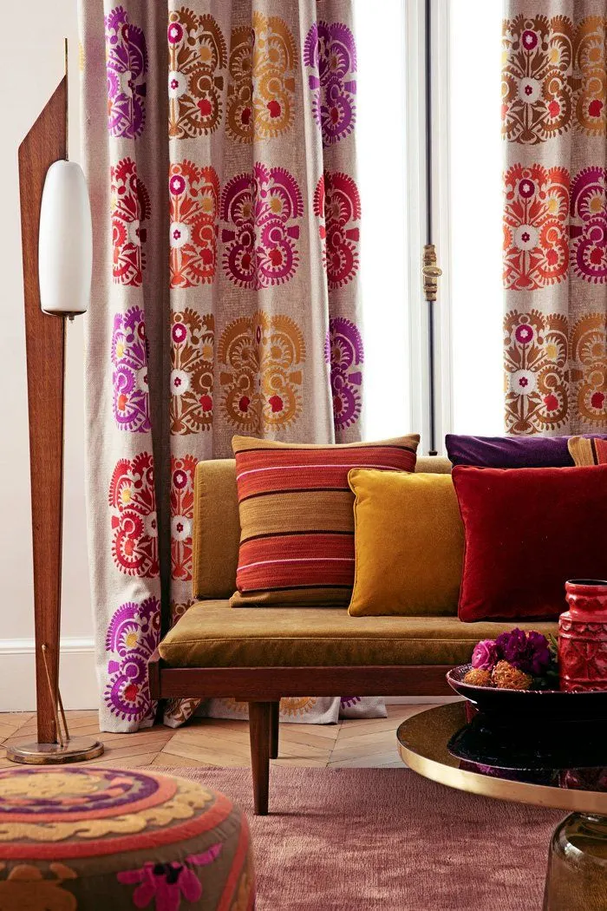
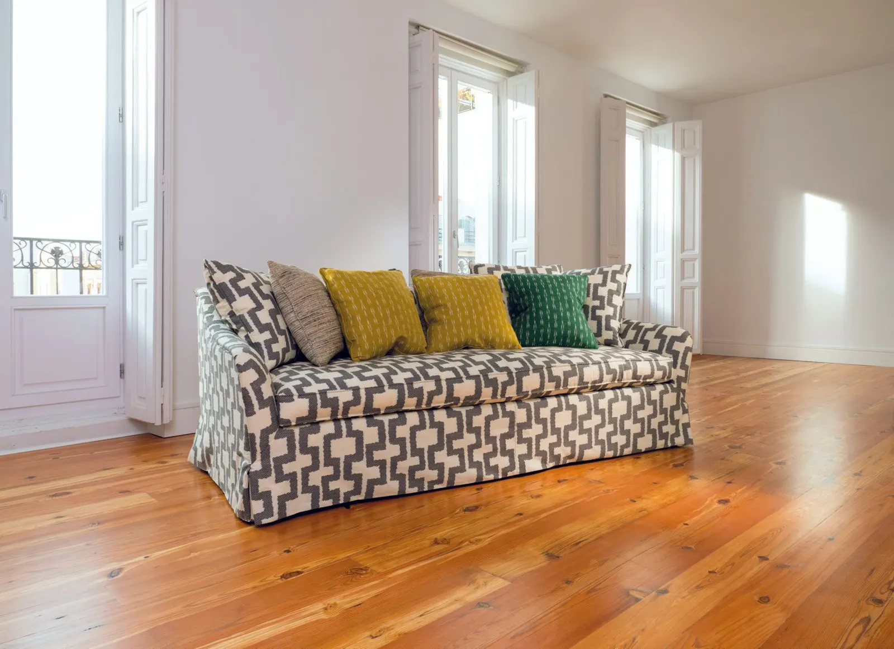
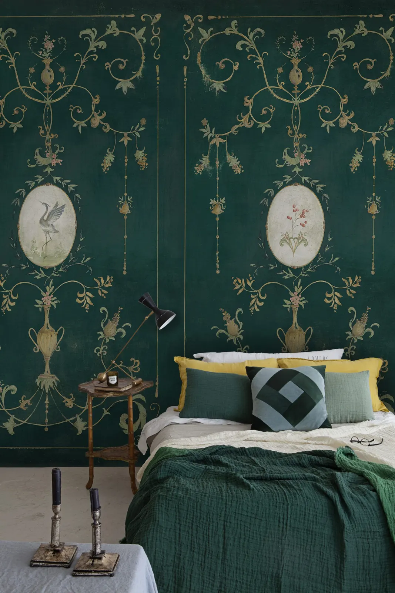
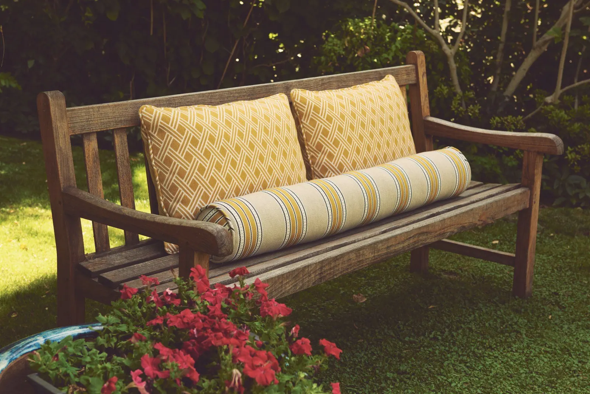

Decoración textil a medida · Jerez de la Frontera
Hacemos de tu casa un hogar exclusivo.
Telas, sofás, cortinas, tapicerías y papel pintado. Modelos de fabricación propia con tejidos de las primeras firmas.
Tienda en Jerez
Calle Porvenir, 36
Cada ventana, cada sofá y cada pared, hechos a la medida justa de su casa.
En Cosas de Casa diseñamos y confeccionamos decoración textil para hogares, jardines y barcos. Trabajamos modelos exclusivos de fabricación propia y ponemos a su disposición miles de telas de las primeras firmas mundiales, para que elija con calma, en nuestra tienda de Jerez.
Firmas con las que trabajamos
01
Cortinas a medida y estores
Cortinas a medida para hacer de sus ventanas un espacio elegante y vistoso. Confeccionamos el acabado que necesite, con o sin forro, en una o en dos capas.
Estores con la medida justa de sus ventanas o ventanales, ideales para reducir la claridad y ganar intimidad.


02
Sofás a medida
Modelos de sofás exclusivos de fabricación propia, pensados para su salón y tapizados con el tejido que usted elija. Y, si lo desea, cojines a juego.
Miles de telas de las primeras firmas mundiales a su disposición: Gastón y Daniela, Romo, Gancedo, Yutes, Antonio Ferre, Clarke & Clarke, Güell-Lamadrid, Sanderson, Mark Alexander, Les Créations…
Pida presupuesto para su sofá →03
Papel pintado y entelado de paredes
Papeles pintados exclusivos con un efecto asombroso en la decoración de su hogar. Y si prefiere tela, entelamos sus paredes y cualquier espacio con los tejidos de los mejores proveedores.
Gastón y Daniela, Romo, Gancedo, Yutes, Antonio Ferre, Clarke & Clarke, Güell-Lamadrid, Sanderson, Mark Alexander, Farrow & Ball, Les Créations…
Venga a ver los muestrarios →

04
Telas náuticas y de exterior
Exclusividad en sus jardines, terrazas y barcos, con la calidad de los mejores proveedores: Sunbrella, Lorenzo Castillo, Tejidos Náuticos y un largo etcétera.
Cuéntenos su proyecto →«Miles de telas de las primeras firmas mundiales, a su disposición.»
Contacto
Hola, ¿en qué podemos ayudarle?
Si tiene alguna pregunta sobre nuestros productos o servicios, llámenos, escríbanos o venga a visitarnos. ¡Esperamos verle pronto!
Jerez de la Frontera Cómo llegar con Google Maps ↗
Horario de tienda
- Lunes a viernes
- 9:30 – 13:30
- Sábados y domingos
- Cerrado
El mapa lo ofrece Google Maps. Al cargarlo, Google recibirá datos de su conexión.
o abrir en Google Maps ↗